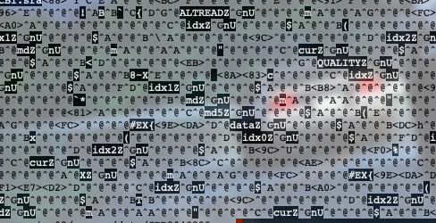
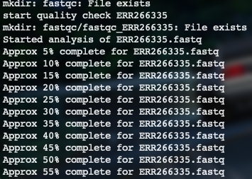
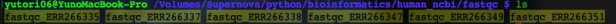
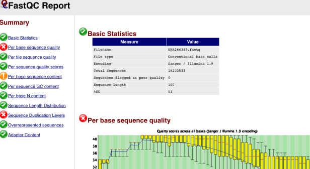
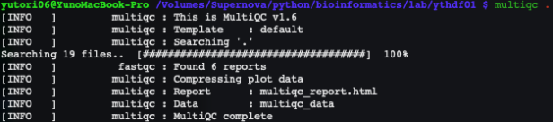
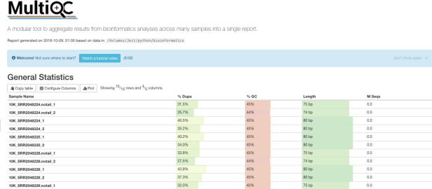
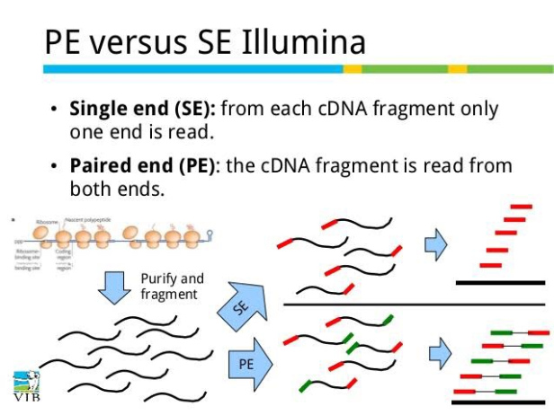
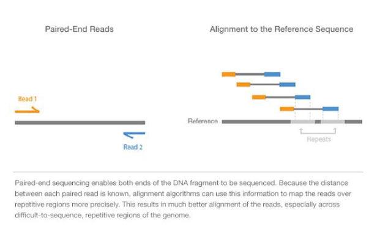

Kallistoを用いたRNA-seq解析パイプライン

今回はKallistoを用いたRNA-seq解析パイプラインを紹介します。LinuxでのBioinformatics環境構築でこの記事への準備はすべて終了している流れになります。Kallistoは小惑星の名前のようです。つっこみどころありましたら、コメントいただけると嬉しいです！それではいきましょう！
リファレンスのダウンロード
kallistoでは、transcriptにシュードアラインメントするので、リファレンスにはcDNAを用います。今回はGenCodeGenesのヒトtranscript sequencesのデータを用いました。
$ wget ftp://ftp.ebi.ac.uk/pub/databases/gencode/Gencode_human/release_29/gencode.v29.transcripts.fa.gz
FASTQファイルをダウンロードする場合
ArrayExpressからFASTQファイルをダウンロード、解凍する。今回のデータは、ヒトES細胞と成熟膵島細胞のデータ。single-end readとなっている。
$ wget ftp://ftp.sra.ebi.ac.uk/vol1/fastq/ERR266/ERR266335/ERR266335.fastq.gz
$ gunzip ERR266335.fastq.gz
ERR266349 ERR266351 ERR266338 ERR266347についても同様に！
参照：
- 次世代シークエンサーDRY解析教本 (細胞工学別冊)
SRAファイルをダウンロードする場合
DDBJのDRA searchからSRAファイルをダウンロード、SRAファイルをFASTQに変換する。pfast-dumpで .sraをペアエンド.fastqに変換。 (kallistoはsraファイルを扱えない ので、pfastq-dumpでfastqに変換する必要がある。）
#!/bin/bash
# download sra files.
mkdir sra-fastq
id=(ERR266335 ERR266337 ERR266338 ERR266347 ERR266349 ERR266351)
for item in ${id[@]}
do
echo start download ${item}.sra
wget ftp://ftp.ddbj.nig.ac.jp/ddbj_database/dra/sralite/ByExp/litesra/ERX/ERX182/ERX182652/${item}/${item}.sra
pfastq-dump -s ${item} -t 8 -O sra-fastq
done
pfastq-dumpのオプション
-s: SRAファイルのID-t: スレッド数-O: 出力ファイル
今回はSRAファイルのダウンロードとpfastq-dumpを使ってsraをfastqに変換する処理をシェルスクリプトを使って行いました。共通項のあるかつ時間のかかるterminalでの処理はシェルスクリプトを使うと便利です。
SRAファイルとは？
Sequence Read Archiveの略。（かつてはNGSにリードが短い特徴があったのでShort Read Archiveと呼ばれていた。）NGSの登場により配列の品質情報を塩基配列とともに記述形式であるFASTQ形式が使用されるようになった時にできたバイナリ形式のデータフォーマット。よってpfastq-dumpなどのツールでFASTQに変換することができる。INSDC、EBI、DDBJが共同で運営しているデータベースSRAに保存してある。
$ less ERR266335.sra
バイナリデータなので、SRAファイルの中をのぞいてみると下のようになる。 
pfastq-dumpとは？
fastq-dumpを並列処理するbashスクリプト。Sequence Read Archive（wiki）からダウンロードされたシーケンスデータ（SRAフォーマット ）をfastq-dumpの並列処理で素早くfastqに変換することができる。Ohtaさんが公開されている。
Fastqc
クオリティチェック。
#!/bin/bash
id=(ERR266335 ERR266337 ERR266338 ERR266347 ERR266349 ERR266351)
mkdir fastqc
for item in ${id[@]}
do
echo start quality check ${item}
mkdir fastqc/fastqc_${item}
fastqc -t 8 -o fastqc/fastqc_${item} sra-fastq/${item}.fastq -f fastq
done
sra-fastq/${item}.fastqがインプットファイル。
fastqcのオプションについて
-t: スレッド数。-O: 解析結果の保存先のディレクトリを指定する。今回はfastqcというディレクトリを作ってそこに入れている。-f: インプットファイルのフォーマット。bam, samにも対応。.fastq.gzもfastqで指定する。
実行結果は下記のようになる。

fastqcディレクトリをのぞいてみる。fastqcのなかにfastqc_${item}というディレクトリが自動生成されている。

fastqc_ERR266335の中をのぞいてみると。htmlファイルとzipファイルが生成されている。
htmlファイルをブラウザで開くことができる。
$ open ERR266335_fastqc.html

参照：
- 次世代シークエンサーDRY解析教本
Multiqc
クオリティチェックの結果、ログファイルなどをまとめていい感じにレポートにしてくれるツール。
# After analysis, run Multiqc by commands below. You can create report.
$ multiqc .
$ open multiqc_report.html
multiqcの実行により、関連ファイルが下記のように自動生成される。

複数のリードのクオリティチェックの結果を同時に表示できる。

参照：
Trimmomatic
Java で書かれているアダプタートリミングツールである。 Trimmomatic はアダプターの除去のみならず、リードの末端から一定数の塩基をトリムしたりする、簡単なクオリティフィルタリングも行える。
$ trimmomatic SE -phred33 ERR266335.fastq output_ERR266335.fastq ILLUMINACLIP:adapters.fa:2:30:10 LEADING:3 TRAILING:3 SLIDINGWINDOW:4:15 MINLEN:36
SEオプションでsingle-end readを指定している。pair-end readでは、オプションでPEとかき、paired outputとunpaired outputの出力先２つを指定する必要がある。
- ILLUMINACLIP : 除去するアダプター配列をFASTA形式で与える。そのあとにミスマッチ許容数、palindrome clip threshold、simple clip thresholdの順に指定していく。
参照
Single-end, Pair-endってなに？？


シーケンスする機器によって、cDNAのかた方のみ読む(single-end read)方法と両端を読む(pair-end read)方法があります。トリミング、アラインメントにおいて、single-endなのか、pair-endなのかを指定しあげる必要があります。
Kallisto
RNA-Seqデータ、またはより一般的にはハイスループットシーケンシングリードを用いて転写産物の量を定量化するためのプログラムである。
kallisto や Salmon を利用して定量したデータを使って、edgeR や DESeq2 などで発現量の群間比較を行うことができる。この際に、Bioconductor の tximport パッケージを利用することで、簡単に kallisto/Salmon の定量結果を edgeR/DESEq2 に渡すことができる。
$ time kallisto/kallisto index -i hsGRCh38_kallisto Homo_sapiens.GRCh38.rna.fa.gz
$ time kallisto/kallisto quant -i hsGRCh38_kallisto sra_fastqc/ERR266335.fastq -o ERR266335exp_kallisto
kallisto quantにおいて、-iと-oのオプションは強制 である。
-i:作成したインデックスの指定-o:出力結果の保存先
デフォルトではペアエンドを読もうとする ので、シングルリードの場合は--singleオプションをつける。シングルの時は
-s: Estimated standard deviation of fragment lengthシーケンシング用のライブラリー中のフラグメントの長さの偏差-l: Estimated average fragment lengthシーケンシング用のライブラリー中のフラグメントの長さの平均
のオプションを追加するのが必須となる。
(kallistoはsraファイルを扱えないので、pfastq-dumpでfastqに変換する必要があった。)
ERR266337 ERR266349 ERR266351 ERR266338 ERR266347も同様にkallisto_quant.shというシェルスクリプトを書き実行した。今回に限らず、時間がかかるかつ繰り返しの処理はシェルスクリプトを書くと良い（私もこれから練習します）。
#!/bin/bash
id=(ERR266335 ERR266337 ERR266349 ERR266351 ERR266338 ERR266347)
for item in ${id[@]}
do
echo start mapping ${item} with Kallisto
result_dir=${item}_exp_kallisto
kallisto/kallisto quant -i hsGRCh38_kallisto -o ${item} --single -l 200 -s 20 -b 100 sra_fastqc/${item}.fastq
done
abundance.tsv, target_id, length, eff_length, est_counts, tpm
参照
- https://scilifelab.github.io/courses/rnaseq/labs/kallisto
- https://bi.biopapyrus.jp/rnaseq/mapping/kallisto/kallisto-single-end-reads.html
- http://kazumaxneo.hatenablog.com/entry/2018/07/14/180503
- https://scilifelab.github.io/courses/rnaseq/labs/kallisto
FPKM, RPKM, TPMとは？
転写産物にマッピングされるリードの数は、サンプル中の総リード数（sequence depth）と転写産物の長さに影響されるので、RNA-Seq データから得られたリードカウントデータは、そのまま転写産物（遺伝子）発現量を表すわけではない。そのため、RNA-Seq データから得られるリードカウントデータを転写産物発現量として利用するには、総リード数や転写産物長で補正する必要がある。
補正計算として、かつてはFPKM,RPKMが用いられてきたが、現在ではかわりにTPMが用いられている。TPMではサンプルごとの値の合計が同じになるので、比較する目的のためにはTPMの方が都合が良い。
FPKM/RPKM の計算
- FPKM : Fragments Per Kilobase of exon per Killion reads Mapped
- RPKM : Reads Per Kilobase of exon per Million mapped reads
$$ FPKM_i = Y_i \frac{10^3}{L_i}\frac{10^6}{N}=\frac{Y_i}{L_i N}10^9 $$
- \(N\): リファレンスにマッピングできた全リード数
- \(Y_i\): そのうち転写産物 \(i\) の領域にマッピングされたリード数
- \(L_i\): 転写産物 \(i\) の長さ
TPMの計算
- TPM : Transcripts Per Kilobase Million
- \(Y_t\) : 転写産物 \(t\) にマッピングされたリードカウント
- \(L_t\): 転写産物 \(t\) の長さ
- \(T_t\): 転写産物 \(t\) の 1,000 bp あたりのリード数
転写産物長による補正後の総リードカウントが 100 万となるように補正
参照
- Tximport, DESeq2を用いた解析はコメントをいただき、ただ今編集中となっております。少々お待ちください。